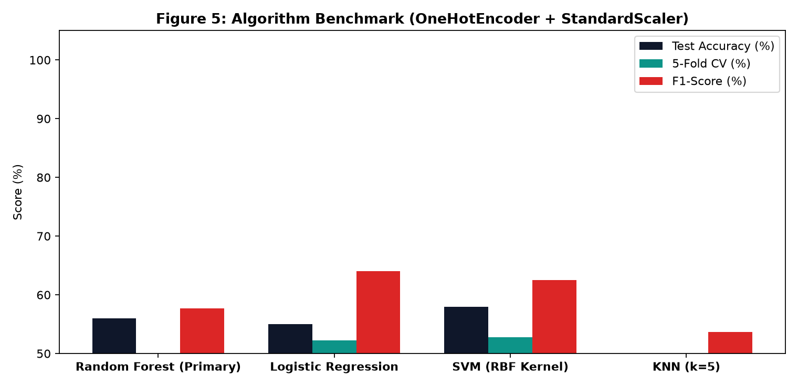
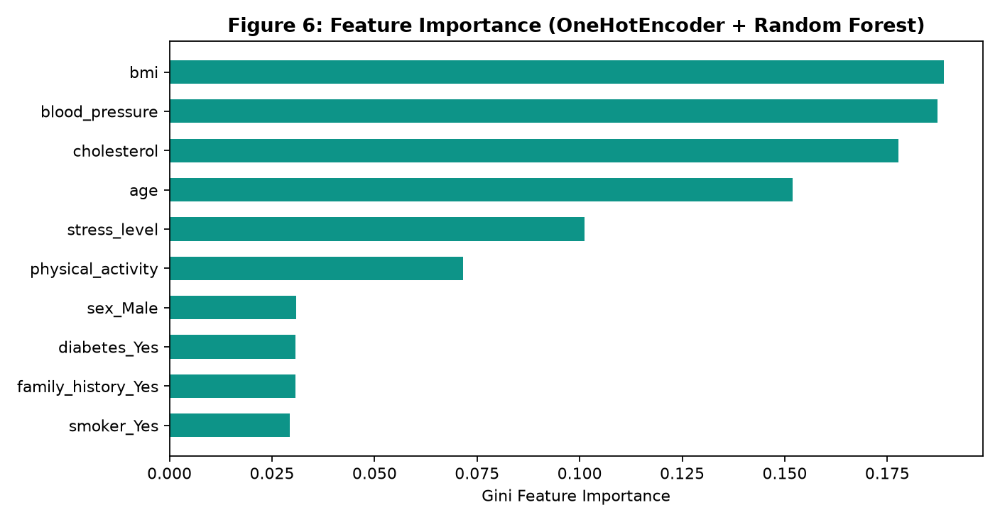
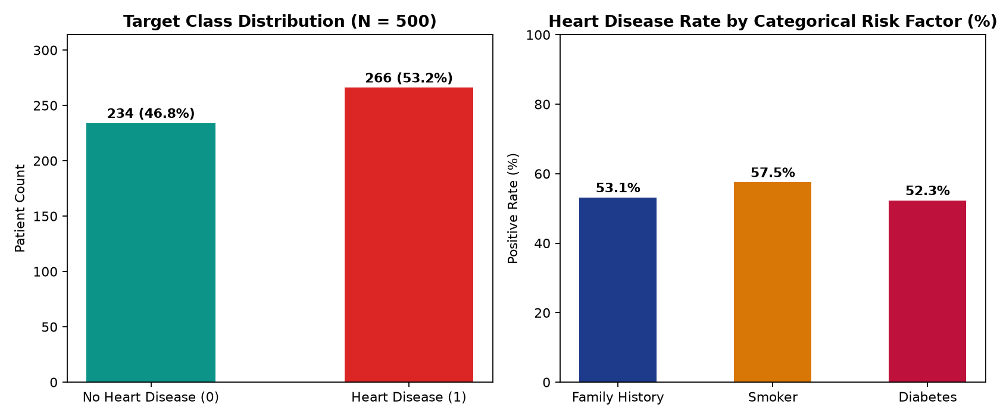

Clinical Intake & Model Controls
Select a patient profile or adjust physiological vitals and categorical risk factors.
Diagnostic Inference Output
Real-time risk probability computed from StandardScaler + OneHotEncoder feature vector.
Low / Normal Risk Profile
No Heart Disease (Class 0)
Risk Probability: 42.1% (Threshold: 50.0%)
Clinical Triage Directive: Continue routine annual preventive screening, dietary counseling, and regular cardiovascular exercise.
Hold-Out Accuracy
56.00%
Random Forest (100 Trees)
ROC-AUC Score
56.80%
SVM RBF Peaks at 58.57%
Precision (PPV)
58.82%
53 Positive Test Instances
Recall (Sensitivity)
56.60%
Logistic Reg. Peaks at 75.47%
F1-Score
0.577
5-Fold CV: 49.20% ± 1.17%
Validation Summary Table (80/20 Stratified Split & 5-Fold CV)
| Model Architecture | Test Acc. | Precision | Recall | F1-Score | ROC-AUC | 5-Fold CV Mean |
|---|---|---|---|---|---|---|
| Random Forest (100 Trees) | 56.00% | 58.82% | 56.60% | 0.5769 | 56.80% | 49.20% ± 1.17% |
| Support Vector Machine (RBF) | 58.00% | 59.32% | 66.04% | 0.6250 | 58.57% | 52.80% ± 4.45% |
| Logistic Regression | 55.00% | 55.56% | 75.47% | 0.6400 | 50.46% | 52.20% ± 4.83% |
| K-Nearest Neighbors (k=5) | 50.00% | 52.73% | 54.72% | 0.5370 | 47.69% | 48.40% ± 3.32% |
Hold-Out ROC-AUC Curves & Multi-Algorithm Benchmark


Feature Importance (OneHotEncoder + Random Forest Pipeline)
Gini impurity reduction across 6 StandardScaler continuous features and 4 OneHotEncoder binary indicators.

ColumnTransformer Schema & Encoding Specification
| Raw Column | Data Type | Transformer | Encoded Feature |
|---|---|---|---|
| age, blood_pressure, cholesterol, bmi, physical_activity, stress_level | Numerical (6) | StandardScaler() | Zero-mean unit-variance standardized features |
| sex | Categorical | OneHotEncoder(drop='first') | sex_Male (1 = Male, 0 = Female) |
| smoker | Categorical | OneHotEncoder(drop='first') | smoker_Yes (1 = Yes, 0 = No) |
| diabetes | Categorical | OneHotEncoder(drop='first') | diabetes_Yes (1 = Yes, 0 = No) |
| family_history | Categorical | OneHotEncoder(drop='first') | family_history_Yes (1 = Yes, 0 = No) |
Contingency (Confusion) Matrix — Hold-Out Test Set (n = 100)
Derived from 53 positive Heart Disease instances and 47 negative instances (Recall = 56.60%, Precision = 58.82%).
| Predicted: Heart Disease (1) | Predicted: No Disease (0) | |
|---|---|---|
| Actual: Heart Disease (1) | 30True Positive (56.60%) | 23False Negative (43.40%) |
| Actual: No Disease (0) | 21False Positive (41.18% FDR) | 26True Negative (55.32%) |
Derived Statistical Rates
Sensitivity / Recall (TPR)56.60% (30 / 53)
Specificity (TNR)55.32% (26 / 47)
Precision / PPV58.82% (30 / 51)
F1-Score (Harmonic Mean)0.5769
False Discovery Rate (FDR)41.18% (21 / 51)
Miss Rate / FNR43.40% (23 / 53)
Clinical Cohort Split (500 Valid Records)
400 Training records (80%) & 100 Hold-Out Test records (20%) • 266 Positive (53.2%) / 234 Negative (46.8%).



Numerical Summary Statistics (N = 500)
| Variable | Mean | SD | Min | 50% (Median) | Max |
|---|---|---|---|---|---|
| age | 54.86 | 14.32 | 30.00 | 55.00 | 79.00 |
| blood_pressure | 132.87 | 26.42 | 90.00 | 132.00 | 179.00 |
| cholesterol | 221.50 | 43.86 | 150.00 | 221.00 | 299.00 |
| bmi | 29.02 | 6.40 | 18.10 | 29.20 | 40.00 |
| physical_activity | 2.05 | 1.42 | 0.00 | 2.00 | 4.00 |
| stress_level | 4.88 | 2.60 | 1.00 | 5.00 | 9.00 |
Model Architecture & Runtime Diagnostics
-
Leak-Free ColumnTransformer Preprocessing (OneHotEncoder + StandardScaler)
Categorical variables (
sex,smoker,diabetes,family_history) are transformed withOneHotEncoder(drop='first', handle_unknown='ignore')while continuous vitals are standardized exclusively on the 400-record training fold. -
Synthetic Cohort Independence Analysis (OLS r = 0.0315)
Ordinary Least Squares regression of
blood_pressureonageyieldsBP = 0.0582 * age + 129.6797(R² = 0.0010), confirming statistically independent synthetic distributions across predictors and explaining the ~50%–58% baseline ceiling across all four classifiers. -
Static Client-Side & Serialized Pipeline Deployment
Trained scikit-learn pipeline is serialized to
heart_disease_model.pklin GitHub alongside this responsive static dashboard deployed on Vercel for sub-millisecond inference.